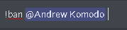

Pode fazer muitas coisas:
- Comandos de música:
- join [canal de voz(opcional)] - Entra na call em que o usuário está
- summon [canal de voz(opcional)] - Invoca o bot forçadamente, só pode ser usado por mod.
- play [nome] - Toca as músicas especifidas
- Comandos de Moderação:
- ban [usuário] - Este comando vai banir o usuário especificado do server. 
- kick [usuário] - Este comando vai expulsar o usuário especificado do server.
- Comandos Sociais:
- avatar [usuário (opcional)] - Bot manda a imagem do perfil do usuário em uma embed.
- icon - Bot manda icone do server em uma embed.
- perfil [usuário (opcional)] - Bot manda uma embed com informações da conta do usuário (data de criação, cargos que tem no server e etc...)
- server - Bot manda uma embed com informações do servidor como no comando de perfil.
- Comandos para informações:
- dolar - Bot manda a cotação do Real para o Dolar atualmente.
- euro - Bot manda a cotação do Real para o Euro atualmente.
- search [pesquisa] - O bot irá pesquisar oque foi pedido e mandar links do que achou.
Futuramente estarei fazendo melhorias e adições de comandos novos no bot.
Atualmente com uma pausa.